07-docker容器单机编排
随着网站架构的升级，容器也使用的越发频繁，应用服务和容器间的关系也越发复杂。
这就要求研发人员能够更好的方法去管理数量较多的容器服务，而不能手动的去挨个管理。
例如一个LNMP的架构，就得部署web服务器，后台程序，数据库，负载均衡等等都需要统一部署在容器里，那么这时候就需要使用统一的容器编排服务docker-compose，通过一个单独的docker-compose.yml模板文件为一个项目定义一组相关联的应用容器。
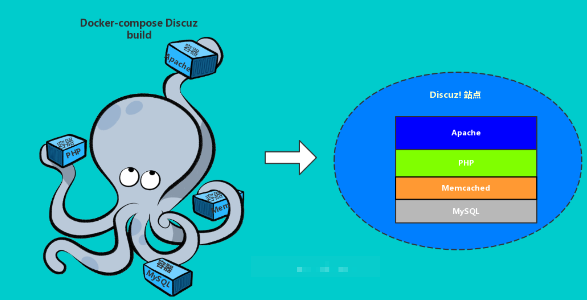
什么是docker-compose
docker-compose的定位就是定义和运行多个docker容器应用。
之前我们了解可以用dockerfile模板文件让用户方便的定义一个单独的应用容器，然而，如LNMP这样的Web项目，就涉及多个服务之间的配合，如nginx,mysql,php,redis等。
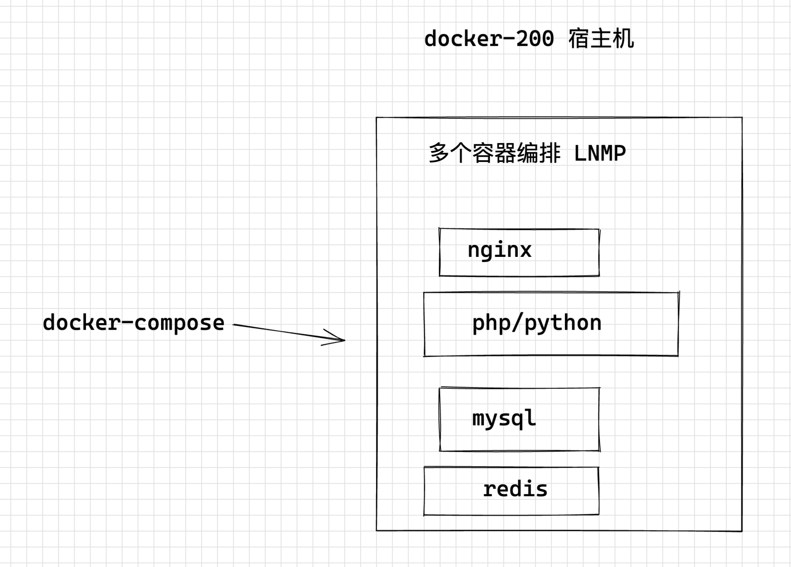
1. compose是用于定义和运行多个容器的一个docker内置工具
2. compose需要你 自己定义yaml文件来描述多个容器的关系
3.写好yaml之后，基于compose命令读取执行yaml内容。
官网资料
https://docs.docker.com/compose/compose-file/compose-versioning/
安装docker-compose
1. yum安装，版本较低
yum install docker-compose
2. 可以去官网找最新脚本
curl -L https://github.com/docker/compose/releases/download/1.29.2/docker-compose-`uname -s`-`uname -m` > /usr/local/bin/docker-compose
添加执行权限
chmod +x /usr/local/bin/docker-compose
测试版本
[root@docker-200 ~]#chmod +x /usr/local/bin/docker-compose
[root@docker-200 ~]#
[root@docker-200 ~]#docker-compose version
docker-compose version 1.29.2, build 5becea4c
docker-py version: 5.0.0
CPython version: 3.7.10
OpenSSL version: OpenSSL 1.1.0l 10 Sep 2019
[root@docker-200 ~]#
docker-compose命令整理
# 默认使用docker-compose.yml构建镜像
$ docker-compose build
$ docker-compose build --no-cache # 不带缓存的构建
# 指定不同yml文件模板用于构建镜像
$ docker-compose build -f docker-compose1.yml
# 列出Compose文件构建的镜像
$ docker-compose images
# 启动所有编排容器服务
$ docker-compose up -d
# 查看正在运行中的容器
$ docker-compose ps
# 查看所有编排容器，包括已停止的容器
$ docker-compose ps -a
# 进入指定容器执行命令
$ docker-compose exec nginx bash
$ docker-compose exec web python manage.py migrate --noinput
# 查看web容器的实时日志
$ docker-compose logs -f web
# 停止所有up命令启动的容器
$ docker-compose down
# 停止所有up命令启动的容器,并移除数据卷
$ docker-compose down -v
# 重新启动停止服务的容器
$ docker-compose restart web
# 暂停web容器
$ docker-compose pause web
# 恢复web容器
$ docker-compose unpause web
# 删除web容器，删除前必需停止stop web容器服务
$ docker-compose rm web
# 查看各个服务容器内运行的进程
$ docker-compose top
# 合集命令
build
config -q
create
down
events
exec
help
images
kill
logs
pause
restart
rm
run
scale
start
stop
top
unpause
up
docker-compose语法
官方文档
https://github.com/compose-spec/compose-spec/blob/master/spec.md
菜鸟的文档
https://www.runoob.com/docker/docker-compose.html
不错的教程，建议每一个参数，不认识来这里查作用
https://yeasy.gitbook.io/docker_practice/compose/compose_file
参考yaml模板
version: '版本号'
services:
服务名1：
images: 镜像名
container_name: 容器名
environment:
- var1=value1
- var2=value2
volumes:
- 存储驱动1:容器内数据目录
- 宿主机目录:容器内数据目录
ports:
- 宿主机端口:容器端口
networks:
- 自定义网络名
networks:
default:
external: true
name: 自定义网络名
1.案例1：部署python应用
编写一个python web案例，涉及两个容器
- python web容器
- redis数据库
思路是
1.构建镜像
2.构建docker-compose.yaml
手工部署步骤
1.创建compose目录，管理配置文件
[root@docker-200 ~]#cd /www.yuchaoit.cn/
[root@docker-200 /www.yuchaoit.cn]#
[root@docker-200 /www.yuchaoit.cn]#mkdir compose_python_web
[root@docker-200 /www.yuchaoit.cn]#cd compose_python_web/
[root@docker-200 /www.yuchaoit.cn/compose_python_web]#
2.flask代码，读写redis
这段代码的逻辑是，访问一次，redis的计数器就+1，查看2个容器的链接关系
from flask import Flask
from redis import Redis
app = Flask(__name__)
redis = Redis(host='redis', port=6379)
@app.route('/')
def hello():
count = redis.incr('hits')
return 'Welcome to www.yuchaoit.cn about docker-compose , this page has been visited {} times\n'.format(count)
if __name__ == "__main__":
app.run(host="0.0.0.0", debug=True)
依赖文件
cat > requirements.txt <<'EOF'
flask
redis
EOF
[root@docker-200 /www.yuchaoit.cn/compose_python_web]#ll
total 8
-rw-r--r-- 1 root root 356 Aug 28 03:56 app.py
-rw-r--r-- 1 root root 12 Aug 28 03:58 requirements.txt
[root@docker-200 /www.yuchaoit.cn/compose_python_web]#
查找python镜像版本
[root@docker-200 /www.yuchaoit.cn/compose_python_web]#curl -s https://registry.hub.docker.com/v1/repositories/python/tags |jq
3.写Dockerfile
FROM python:3.9.7
MAINTAINER www.yuchaoit.cn
COPY app.py /opt
COPY requirements.txt /opt
WORKDIR /opt
RUN pip3 install --upgrade pip -i https://pypi.douban.com/simple
RUN pip3 install -r requirements.txt -i https://pypi.douban.com/simple
4.构建镜像
[root@docker-200 /www.yuchaoit.cn/compose_python_web]#
[root@docker-200 /www.yuchaoit.cn/compose_python_web]#docker build --no-cache -t python3_flask .
5.获取redis镜像，测试
docker pull redis
6.运行redis，flask两个容器，测试运行结果
[root@docker-200 /www.yuchaoit.cn/compose_python_web]#docker run -d -p 6379:6379 --name to_flask_redis redis
27b920026b88bbdf741023d5695dae35003b79f703b9b41feae7847ac811f953
7.运行flask，需要关联redis容器才可以
注意这里一个细节，flask代码里，链接redis，填入的是主机名 "redis"
因此要通过主机名，让2个容器识别
docker run -d -p 5000:5000 --link <容器name or id>:alias --name flask_with_redis python3_flask python3 app.py
docker run -d -p 5000:5000 --link to_flask_redis:redis --name flask_with_redis python3_flask python3 app.py
[root@docker-200 /www.yuchaoit.cn/compose_python_web]#
[root@docker-200 /www.yuchaoit.cn/compose_python_web]#docker ps
CONTAINER ID IMAGE COMMAND CREATED STATUS PORTS NAMES
3631d00c841c python3_flask "python3 app.py" 2 seconds ago Up 2 seconds 0.0.0.0:5000->5000/tcp, :::5000->5000/tcp flask_with_redis
27b920026b88 redis "docker-entrypoint.s…" 10 minutes ago Up 10 minutes 0.0.0.0:6379->6379/tcp, :::6379->6379/tcp to_flask_redis
[root@docker-200 /www.yuchaoit.cn/compose_python_web]#
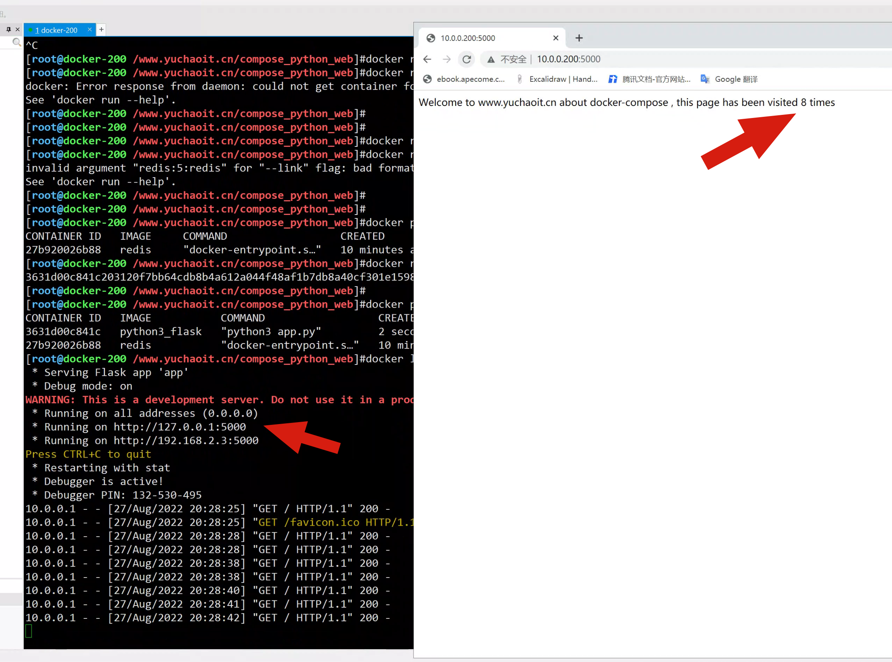
因此，这里链接两个容器的重点在于，--link参数
升级为docker-compose
yaml文件内容如下
[root@docker-200 /www.yuchaoit.cn/compose_python_web]#cat docker-compose.yml
flask_web:
image: python3_flask
command: python app.py
ports:
- "5000:5000"
links:
- redis
redis:
image: redis
停止之前的容器，以compose形式运行
docker-compose up
这也忒方便了呀！
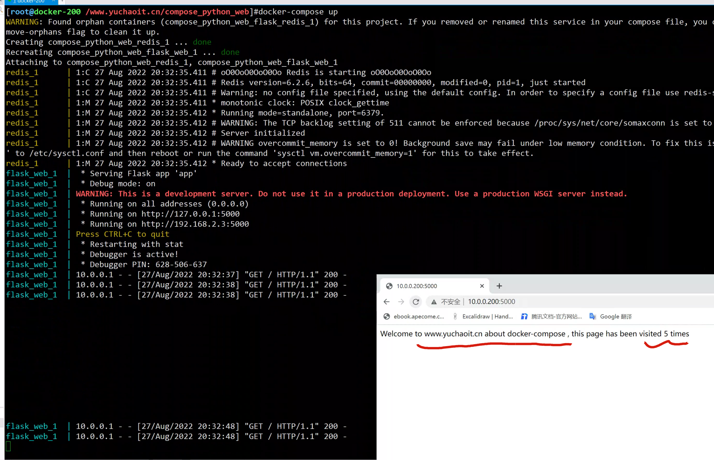
后台运行
[root@docker-200 /www.yuchaoit.cn/compose_python_web]#docker-compose up -d
WARNING: Found orphan containers (compose_python_web_flask_redis_1) for this project. If you removed or renamed this service in your compose file, you can run this command with the --remove-orphans flag to clean it up.
Starting compose_python_web_redis_1 ... done
Starting compose_python_web_flask_web_1 ... done
2.案例2，部署zabbix
官网文档
https://www.zabbix.com/documentation/5.0/zh/manual/installation/containers
使用自定义网络去创建
docker network create -d bridge --subnet 172.16.1.0/24 --gateway 172.16.1.1 zabbix-net
compose文件
注意细节坑
mysql映射的目录要存在
[root@docker-200 ~]#mkdir -p /data/docker_mysql
[root@docker-200 ~]#useradd mysql -u 2000 -M -s /sbin/nologin
[root@docker-200 ~]#chown -R 2000.2000 /data/docker_mysql
具体yaml
version: '3' #内容填3或者2
services:
mysql: #服务名称
image: mysql:5.7 #镜像名称
container_name: mysql #容器名称
user: 2000:2000 #指定用户
environment: #服务所需的操作
- "MYSQL_ROOT_PASSWORD=www.yuchaoit.cn"
- "MYSQL_DATABASE=zabbix"
- "MYSQL_USER=zabbix"
- "MYSQL_PASSWORD=www.yuchaoit.cn"
volumes:
- "/data/docker_mysql:/var/lib/mysql" #映射的数据目录
ports:
- "3306:3306" #映射端口
command: #所需的命令，这里指指定字符集
--character-set-server=utf8
--collation-server=utf8_bin
zabbix-server-mysql:
image: zabbix/zabbix-server-mysql
container_name: zabbix-server-mysql
environment:
- "DB_SERVER_HOST=mysql"
- "MYSQL_USER=zabbix"
- "MYSQL_PASSWORD=www.yuchaoit.cn"
ports:
- "10051:10051"
depends_on: #需要链接的服务，link换成了depends_on
- mysql
zabbix-web-nginx-mysql:
image: zabbix/zabbix-web-nginx-mysql
container_name: zabbix-web-nginx-mysql
environment:
- "DB_SERVER_HOST=mysql"
- "MYSQL_USER=zabbix"
- "MYSQL_PASSWORD=www.yuchaoit.cn"
- "ZBX_SERVER_HOST=zabbix-server-mysql"
- "PHP_TZ=Asia/Shanghai"
ports:
- "80:8080"
depends_on:
- mysql
- zabbix-server-mysql
networks:
deault:
external: true
name: zabbix-net
启动即可
[root@docker-200 /www.yuchaoit.cn/compose_zabbix]#docker-compose up
WARNING: Some networks were defined but are not used by any service: deault
Creating network "compose_zabbix_default" with the default driver
Pulling mysql (mysql:5.7)...
确保日志都是对的
Admin
zabbix
部署结果
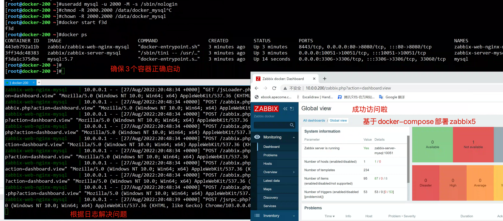
并且zabbix的数据，持久化在了
[root@docker-200 ~]#ls /data/docker_mysql/
auto.cnf ca.pem client-key.pem ibdata1 ib_logfile1 mysql private_key.pem server-cert.pem sys
ca-key.pem client-cert.pem ib_buffer_pool ib_logfile0 ibtmp1 performance_schema public_key.pem server-key.pem zabbix
[root@docker-200 ~]#
3.案例3，部署wordpress
使用的是第三代compose版本语法，有些旧的参数就不适用了。
--default_authentication_plugin=mysql_native_password
有关mysql8的密码加密插件修改
并且这里单独的设置了一个数据库的数据目录映射，名字叫做db_data
volumes:
- db_data:/var/lib/mysql
yml参数解释：解决容器的依赖、启动先后的问题。先启动，然后启动wordpress
depends_on:
- db
具体yaml
version: "3"
services:
db:
image: mysql:8.0
command:
- --default_authentication_plugin=mysql_native_password
- --character-set-server=utf8mb4
- --collation-server=utf8mb4_unicode_ci
volumes:
- db_data:/var/lib/mysql
restart: always
environment:
MYSQL_ROOT_PASSWORD: www.yuchaoit.cn
MYSQL_DATABASE: wordpress
MYSQL_USER: wordpress
MYSQL_PASSWORD: www.yuchaoit.cn
wordpress:
depends_on:
- db
image: wordpress:latest
ports:
- "8000:80"
restart: always
environment:
WORDPRESS_DB_HOST: db:3306
WORDPRESS_DB_USER: wordpress
WORDPRESS_DB_PASSWORD: www.yuchaoit.cn
volumes:
db_data:
运行命令
发现这里会默认创建
- 网络驱动
- 存储驱动
[root@docker-200 /www.yuchaoit.cn/compose_wordpress]#docker-compose up
Creating network "compose_wordpress_default" with the default driver
Creating volume "compose_wordpress_db_data" with default driver
Pulling db (mysql:8.0)...
查看创建的存储卷
如果没指定映射到宿主机那里的话，就会如此，自动创建到一个目录
[root@docker-200 ~]#docker inspect compose_wordpress_db_1 |grep -i 'mounts' -A 10
"Mounts": [
{
"Type": "volume",
"Name": "compose_wordpress_db_data",
"Source": "/var/lib/docker/volumes/compose_wordpress_db_data/_data",
"Destination": "/var/lib/mysql",
"Driver": "local",
"Mode": "rw",
"RW": true,
"Propagation": ""
}
[root@docker-200 ~]#
查看映射的容器mysql数据
[root@docker-200 ~]#ls /var/lib/docker/volumes/compose_wordpress_db_data/_data
auto.cnf binlog.index client-cert.pem #ib_16384_1.dblwr ib_logfile0 #innodb_temp performance_schema server-cert.pem undo_001
binlog.000001 ca-key.pem client-key.pem ib_buffer_pool ib_logfile1 mysql private_key.pem server-key.pem undo_002
binlog.000002 ca.pem #ib_16384_0.dblwr ibdata1 ibtmp1 mysql.ibd public_key.pem sys wordpress
[root@docker-200 ~]#
可以查看wordpress网桥
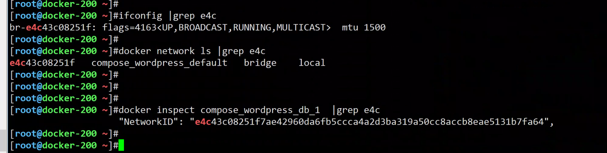
[root@docker-200 ~]#ifconfig |grep e4c
br-e4c43c08251f: flags=4163<UP,BROADCAST,RUNNING,MULTICAST> mtu 1500
[root@docker-200 ~]#
[root@docker-200 ~]#docker network ls |grep e4c
e4c43c08251f compose_wordpress_default bridge local
[root@docker-200 ~]#
[root@docker-200 ~]#
[root@docker-200 ~]#
[root@docker-200 ~]#docker inspect compose_wordpress_db_1 |grep e4c
"NetworkID": "e4c43c08251f7ae42960da6fb5ccca4a2d3ba319a50cc8accb8eae5131b7fa64",
[root@docker-200 ~]#
[root@docker-200 ~]#
图解结果
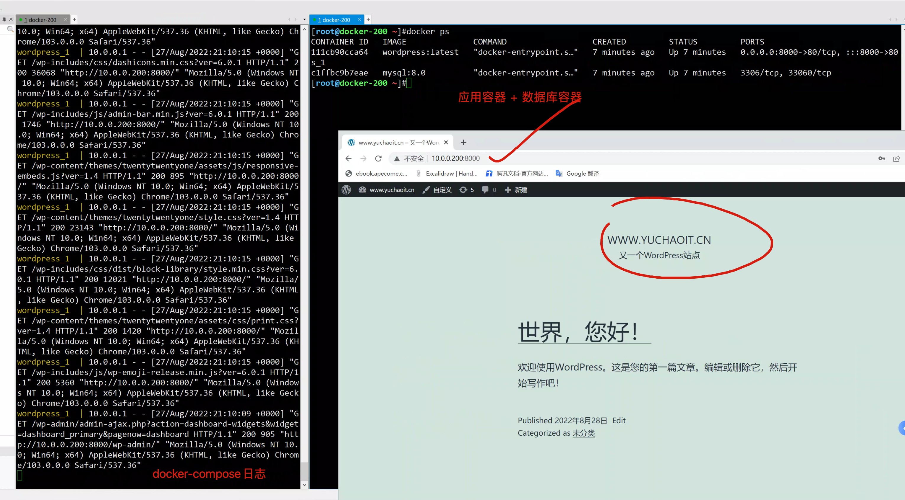
4.docker部署cicd系统
jenkins配置
- version可以不写，写了新版本，docker-compose可识别的功能更多更新
- 用root运行
- 端口映射
- 存储卷映射
- 如果端口冲突，自行修改即可
version: '3'
services:
gitlab:
image: 'jenkins/jenkins:latest'
container_name: jenkins
restart: always
privileged: true
user: root
ports:
- '8080:8080'
- '50000:50000'
volumes:
- '/data/jenkins:/var/jenkins_home'
- '/var/run/docker.sock:/var/run/docker.sock'
- '/usr/bin/docker:/usr/bin/docker'
- '/root/.ssh:/root/.ssh'
执行，创建对应目录，启动
mkdir -p /data/jenkins
指定文件运行
[root@docker-200 /www.yuchaoit.cn/compose_cicd]#docker-compose -f jenkins.yml up -d
Creating network "compose_cicd_default" with the default driver
Pulling gitlab (jenkins/jenkins:latest)...
查看进程
[root@docker-200 /www.yuchaoit.cn/compose_cicd]#docker ps
CONTAINER ID IMAGE COMMAND CREATED STATUS PORTS NAMES
e77d6f00ff7b jenkins/jenkins:latest "/sbin/tini -- /usr/…" About a minute ago Up About a minute 0.0.0.0:8080->8080/tcp, :::8080->8080/tcp, 0.0.0.0:50000->50000/tcp, :::50000->50000/tcp jenkins
[root@docker-200 /www.yuchaoit.cn/compose_cicd]#
拷贝出容器内的文件
[root@docker-200 /www.yuchaoit.cn/compose_cicd]#docker cp e77:/var/jenkins_home/secrets/initialAdminPassword /opt/
[root@docker-200 /www.yuchaoit.cn/compose_cicd]#cat /opt/initialAdminPassword
f98ffbce63934147a035b24665ce2715
[root@docker-200 /www.yuchaoit.cn/compose_cicd]#
访问jenkins
这里是基于开源镜像，基于debian发行版下的jenkins，可能会导致不熟练维护。
生产下，还是为了方便运维维护，自行决定构建centos+jenkins
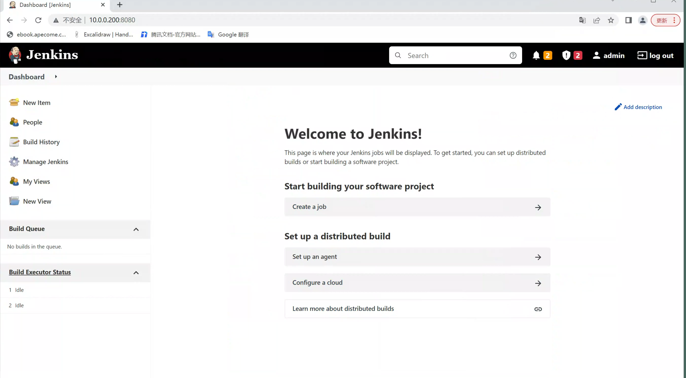
gitlab+jenkins
定义两组service即可，这样docker-compose可以一起管理
version: '3'
services:
jenkins:
image: 'jenkins/jenkins:latest'
container_name: jenkins
restart: always
privileged: true
user: root
ports:
- '8080:8080'
- '50000:50000'
volumes:
- '/data/jenkins:/var/jenkins_home'
- '/var/run/docker.sock:/var/run/docker.sock'
- '/usr/bin/docker:/usr/bin/docker'
- '/root/.ssh:/root/.ssh'
gitlab:
image: 'gitlab/gitlab-ce:latest'
restart: always
hostname: 'www.yuchaoit.cn'
environment:
GITLAB_OMNIBUS_CONFIG: |
external_url 'http://10.0.0.200'
gitlab_rails['gitlab_shell_ssh_port'] = 2222
alertmanager['enable'] = false
grafana['enable'] = false
prometheus['enable'] = false
node_exporter['enable'] = false
redis_exporter['enable'] = false
postgres_exporter['enable'] = false
pgbouncer_exporter['enable'] = false
gitlab_exporter['enable'] = false
ports:
- '9090:80'
- '2222:22'
volumes:
- '/data/gitlab/config:/etc/gitlab'
- '/data/gitlab/logs:/var/log/gitlab'
- '/data/gitlab/data:/var/opt/gitlab'
启动
[root@docker-200 /www.yuchaoit.cn/compose_cicd]#docker-compose -f jenkins_gitlab.yml up -d
Pulling gitlab (gitlab/gitlab-ce:latest)...
latest: Pulling from gitlab/gitlab-ce
7b1a6ab2e44d: Pull complete
6c37b8f20a77: Pull complete
f50912690f18: Pull complete
bb6bfd78fa06: Pull complete
2c03ae575fcd: Pull complete
839c111a7d43: Pull complete
4989fee924bc: Pull complete
666a7fb30a46: Pull complete
Digest: sha256:5a0b03f09ab2f2634ecc6bfeb41521d19329cf4c9bbf330227117c048e7b5163
Status: Downloaded newer image for gitlab/gitlab-ce:latest
Recreating jenkins ... done
Creating jenkins ... done
[root@docker-200 /www.yuchaoit.cn/compose_cicd]#
稍加等待，gitlab的安装结束
访问gitlab
默认密码
root
密码在容器里
root@www:/# cat /etc/gitlab/initial_root_password
# WARNING: This value is valid only in the following conditions
# 1. If provided manually (either via `GITLAB_ROOT_PASSWORD` environment variable or via `gitlab_rails['initial_root_password']` setting in `gitlab.rb`, it was provided before database was seeded for the first time (usually, the first reconfigure run).
# 2. Password hasn't been changed manually, either via UI or via command line.
#
# If the password shown here doesn't work, you must reset the admin password following https://docs.gitlab.com/ee/security/reset_user_password.html#reset-your-root-password.
Password: 5HwWiUBz/OkkUB27+On6MA6pYyR3UswPw0p0mwfVcOY=
# NOTE: This file will be automatically deleted in the first reconfigure run after 24 hours.
root@www:/#
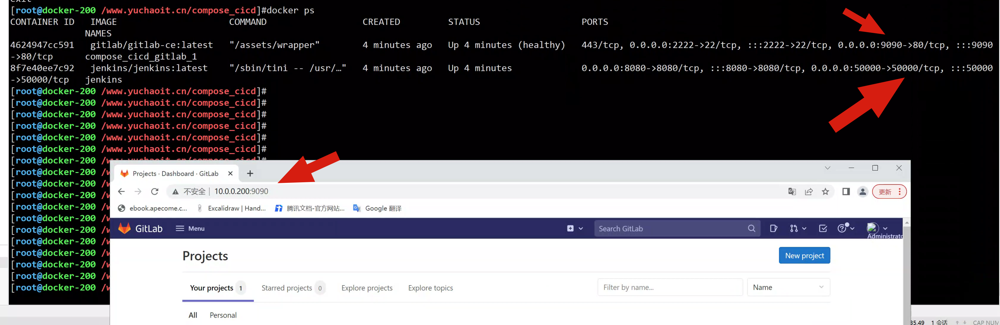
访问jenkins
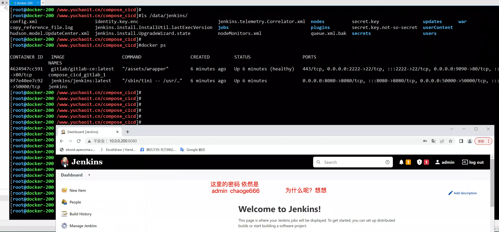
测试gitlab和jenkins互通
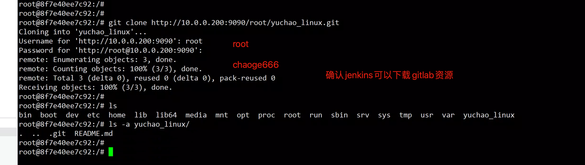
5.小结
可见，为何容器化部署是天然的敏捷开发推进工具呢，答案显而易见。